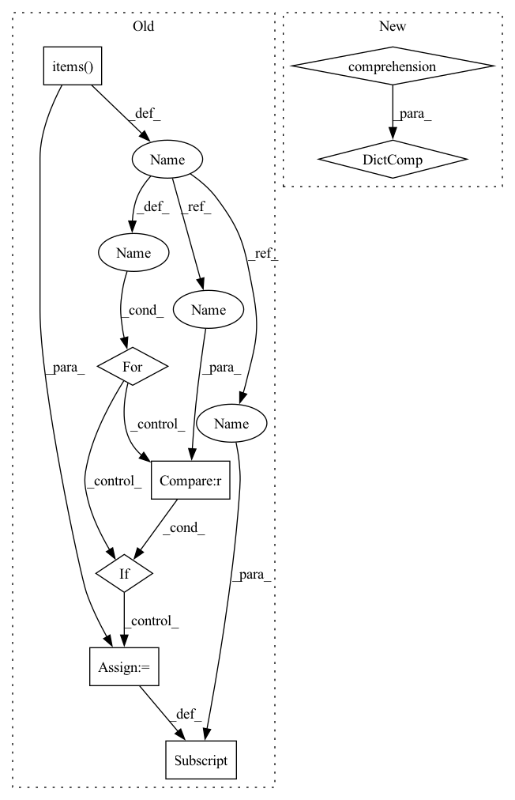

Pattern ID :33812
Before Change
new_sample = {}
// mapping to `albumentations` acceptable parameters
for source , target in self.transform_targets.items():
if source in sample :
if source == "input" or source == "target":
new_sample[target] = sample[source]
else:
new_sample[source] = sample[source]
new_sample = transform(**new_sample)
// inverse mappingAfter Change
if transform is None:
return sample
valid_sample = {key: value for (key, value) in sample.items() if key in self.__valid_transform_params}
new_sample = transform(**valid_sample)
return new_sample
def _read_image(self, image_path: str) -> np.ndarray:In pattern: SUPERPATTERN
Frequency: 3
Non-data size: 8
Instances Fragment ID: 97023128
Project Name: eora-ai/torchok
Commit Name: 8eed040a824ef97af24c29a4106f0457205bc490
Time: 2022-04-11
Author: patr982@gmail.com
File Name: src/data/datasets/base.py
M Class Name: ImageDataset
N Class Name: ImageDataset
M Method Name: _apply_transform(3)
N Method Name: _apply_transform(3)
M Parent Class: ABC,Dataset
N Parent Class: ABC,Dataset
M File Name: src/data/datasets/base.py
N File Name: src/data/datasets/base.py
M Start Line: 67
M End Line: 83
N Start Line: 59
N End Line: 61
Before Change
new_sample = {}
// mapping to `albumentations` acceptable parameters
for source , target in self.transform_targets.items():
if source in sample:
if source == "input" or source == "target" :
new_sample[target] = sample[source]
else:
new_sample[source] = sample[source]
new_sample = transform(**new_sample)
// inverse mappingAfter Change
if transform is None:
return sample
valid_sample = {key: value for (key, value) in sample.items() if key in self.__valid_transform_params}
new_sample = transform(**valid_sample)
return new_sample
def _read_image(self, image_path: str) -> np.ndarray: Fragment ID: 97023134
Project Name: eora-ai/torchok
Commit Name: 8eed040a824ef97af24c29a4106f0457205bc490
Time: 2022-04-11
Author: patr982@gmail.com
File Name: src/data/datasets/base.py
M Class Name: ImageDataset
N Class Name: ImageDataset
M Method Name: _apply_transform(3)
N Method Name: _apply_transform(3)
M Parent Class: ABC,Dataset
N Parent Class: ABC,Dataset
M File Name: src/data/datasets/base.py
N File Name: src/data/datasets/base.py
M Start Line: 67
M End Line: 83
N Start Line: 59
N End Line: 61
Before Change
labels = labels[0]
else:
labels = None
for name , value in inputs.items():
if name in self.onnx_named_inputs :
if isinstance(value, (list, tuple)):
value = self.onnx_config.flatten_output_collection_property(name, value)
onnx_inputs.update(
{tensor_name: pt_tensor.numpy() for tensor_name, pt_tensor in value.items()}
)
else:
onnx_inputs[name] = value.numpy()
preds = session.run(self.onnx_named_outputs, onnx_inputs)
if len(preds) == 1:
preds = preds[0]After Change
labels = labels[0]
else:
labels = None
onnx_inputs = {key: np.array([inputs[key]]) for key in self.onnx_config.inputs}
preds = session.run(self.onnx_named_outputs, onnx_inputs)
if len(preds) == 1:
preds = preds[0]
all_preds = preds if all_preds is None else nested_concat(all_preds, preds, padding_index=-100) Fragment ID: 97023125
Project Name: huggingface/optimum
Commit Name: 1ac1f767815f1583a6228b8011e7eef54dd9cf4b
Time: 2022-03-11
Author: 80481427+echarlaix@users.noreply.github.com
File Name: optimum/onnxruntime/model.py
M Class Name: ORTModel
N Class Name: ORTModel
M Method Name: evaluation_loop(2)
N Method Name: evaluation_loop(2)
M Parent Class:
N Parent Class:
M File Name: optimum/onnxruntime/model.py
N File Name: optimum/onnxruntime/model.py
M Start Line: 84
M End Line: 102
N Start Line: 85
N End Line: 93
Before Change
// Build the input and output spec
from zenml.artifacts.type_registery import type_registry
for key , value in self.INPUT_SIGNATURE.items():
verified_types = type_registry.get_artifact_type(value)
if key not in self.INPUT_SPEC :
self.INPUT_SPEC[key] = verified_types[0]
else:
if self.INPUT_SPEC[key] not in verified_types:
raise StepInterfaceError(After Change
*artifacts, **kw_artifacts
)
self.INPUT_SPEC = {arg_name: artifact_type.type
for arg_name, artifact_type in
input_artifacts.items()}
// Prepare the output artifacts and spec
from zenml.artifacts.type_registery import type_registry
Fragment ID: 97023127
Project Name: maiot-io/zenml
Commit Name: 36f5dc8eae5017f154e410e067508284e6734d23
Time: 2021-12-03
Author: bariscandurak@hotmail.com
File Name: src/zenml/steps/base_step.py
M Class Name: BaseStep
N Class Name: BaseStep
M Method Name: __call__(1)
N Method Name: __call__(1)
M Parent Class:
N Parent Class:
M File Name: src/zenml/steps/base_step.py
N File Name: src/zenml/steps/base_step.py
M Start Line: 472
M End Line: 511
N Start Line: 479
N End Line: 485